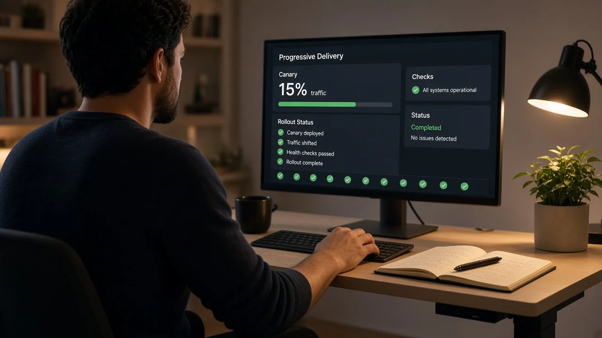
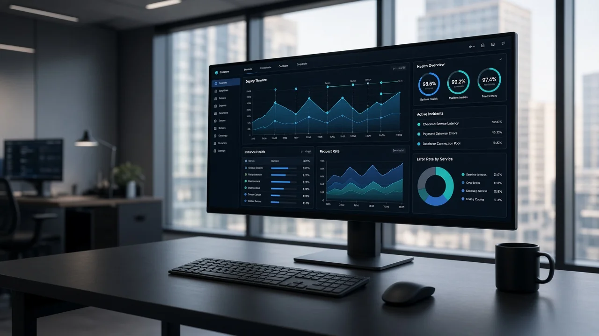
StacklyTechnology
Ship faster. Scale cleaner.
Unify delivery, observability, and cloud ops in one signal-driven workspace built for modern SaaS teams.
99.99%Uptime SLA
3.2·Faster releases
40%Lower cloud spend
120+Enterprise teams
Trusted by
Product-led teams shipping on Graphite Signal
120+Enterprise teams
99.99%Uptime SLA
3.2·Faster releases
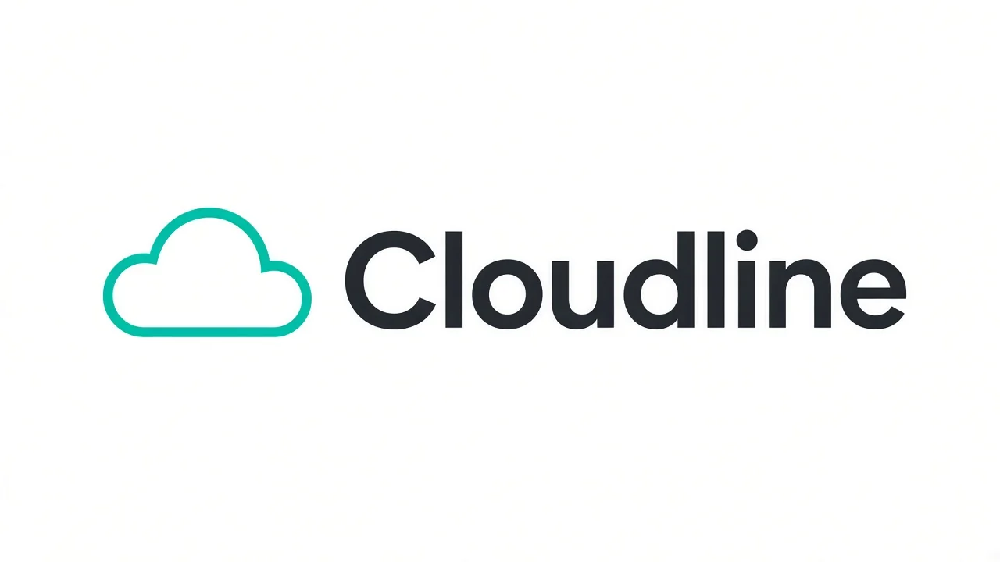
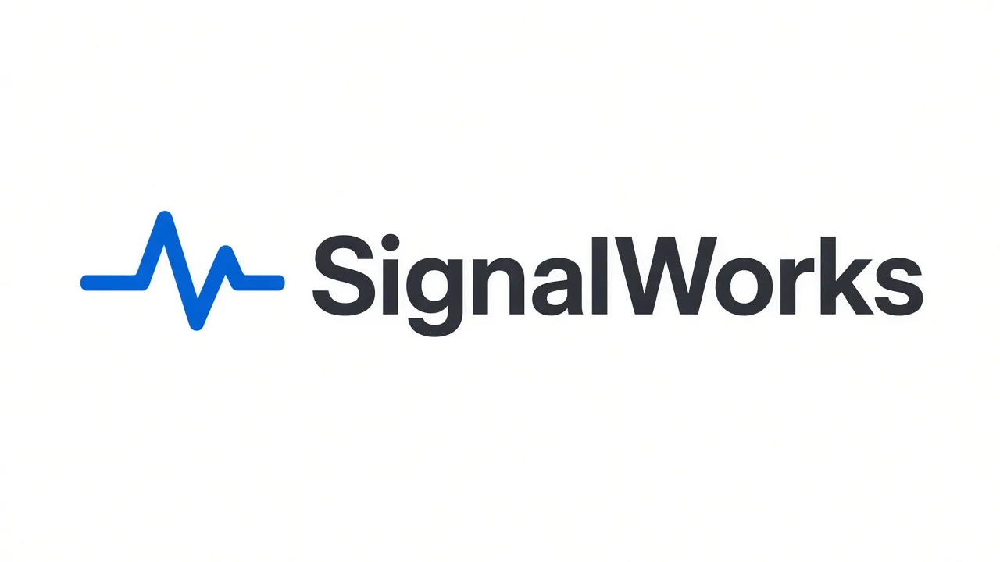
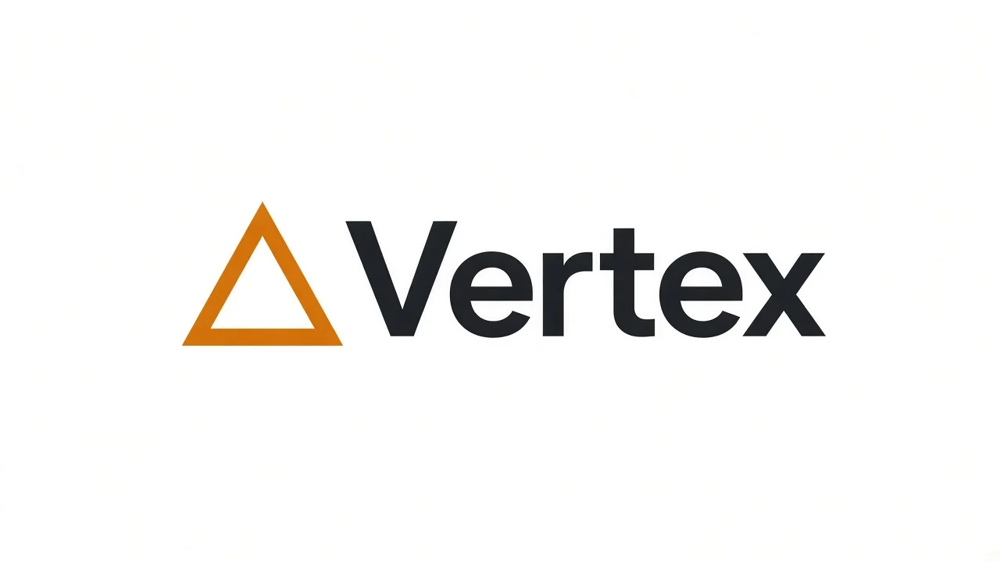
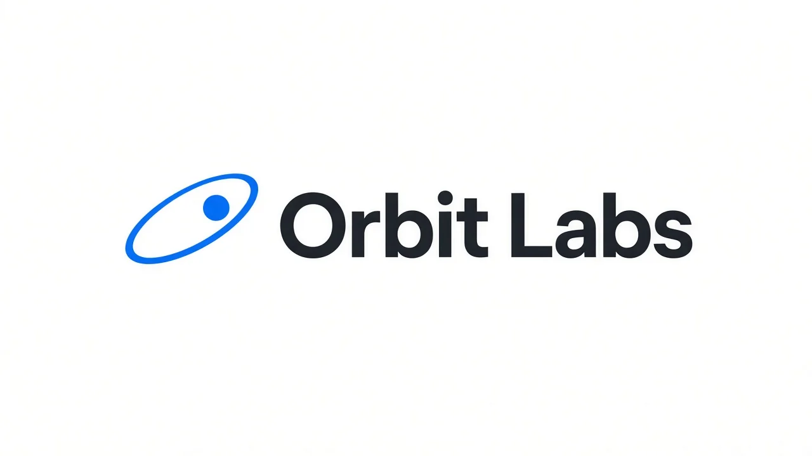
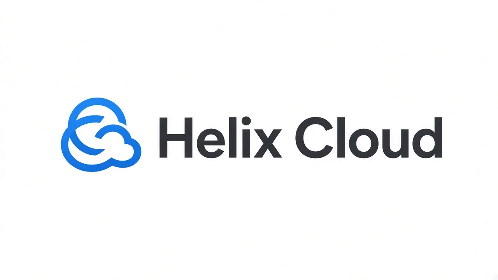
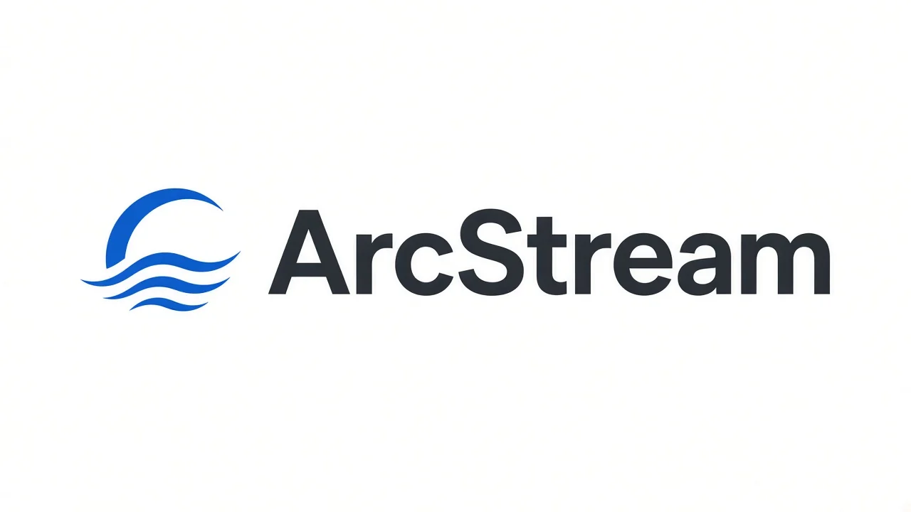
Platform pillars
Everything your stack needs to stay in sync
Graphite Signal connects planning, pipelines, and production telemetry so teams move with clarity.
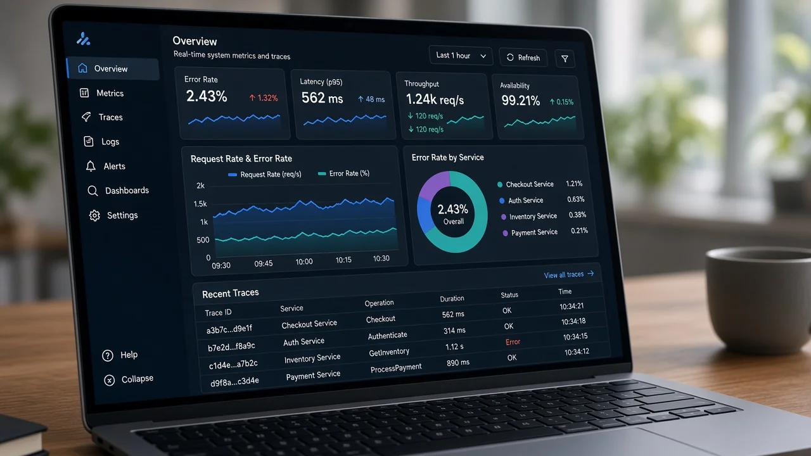


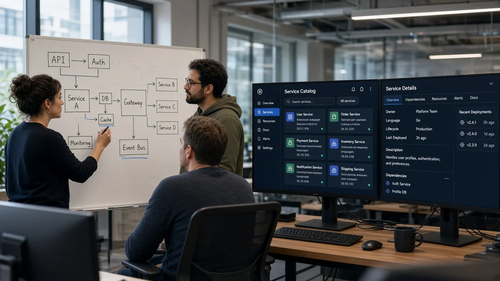

Services
Expert layers on top of your platform
Engagement
Platform engineering
Golden paths, internal developer portals, and paved roads for every squad.
Learn more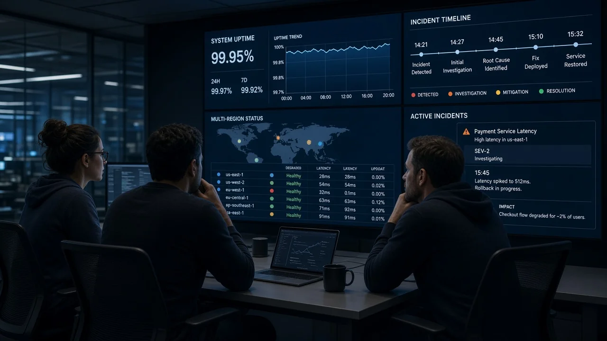
Operations
Cloud operations
24/7 runbooks, incident automation, and multi-cloud resilience patterns.
Learn more
Trust
Security & compliance
Continuous controls, audit-ready evidence, and proactive threat modeling.
Learn moreHow it works
From signal to shipped in four steps
Graphite Signal turns a fragmented toolchain into one delivery loop·connect once, model how you ship, watch every release, then improve cost and reliability from the same workspace.

01
Connect your stack
Plug in Git providers, CI systems, and cloud accounts with guided onboarding. Most teams finish the first workspace in under an afternoon·no rip-and-replace required.
- GitHub, GitLab, Bitbucket, and common CI runners
- AWS, GCP, Azure, and Kubernetes clusters
- SSO and role mapping from day one

02
Model delivery paths
Codify environments, approval gates, and quality bars so every squad ships the same way·progressive delivery when you need it, simple promote when you do not.
- Environment topology and promotion rules
- Canary, blue/green, and feature-flag paths
- Policy checks before production is reachable
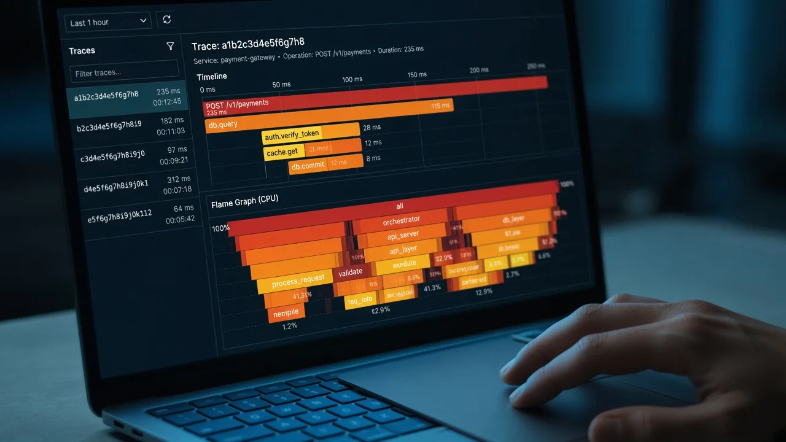
03
Observe every release
Every deploy carries metadata into metrics, traces, and logs. When something burns the error budget, owners see impact next to the change that caused it·not in a separate tool.
- Release-aware SLOs and burn alerts
- Trace and log correlation by deploy ID
- Customer impact signals beside the rollout
04
Optimize continuously
Close the loop with spend, performance, and reliability insights in the same workspace. Right-size workloads, tighten gates, and keep shipping velocity without a separate FinOps project.
- Live cost signals tied to services and teams
- Guardrails that pause risky promotions
- Weekly improvement digests for platform leads
Testimonials
Teams that ship with Stackly
Platform leads and SREs on the shift from noisy dashboards to one shared signal.
4.9
Avg. from 120+ teams
·We cut release cycles from weeks to days while improving our error budget posture.·
NovaStack moved progressive delivery and SLO burn into one Graphite Signal workspace.
3.2· faster releases
·Stackly gave us one pane for deploys, spend, and incidents·finally.·
Cloudline retired three status tools after correlating cost and incidents to every release.
40% lower cloud spend
·Our SRE and product teams align on the same signals before every launch.·
Vertex SaaS treats launch readiness as a shared scorecard·not a last-minute Slack thread.
99.99% uptime posture
From the blog
Latest thinking from Stackly
Field notes on delivery, observability, and cloud spend from teams running Graphite Signal.

Product
Designing progressive delivery at scale
How Graphite Signal teams roll out features without sacrificing reliability·or the error budget.
Engineering
Observability that follows the deploy
Correlate traces with release metadata for faster root-cause analysis when the canary wobbles.
Cloud
FinOps guardrails for multi-cloud SaaS
Policy-as-code patterns to keep spend predictable as you scale across regions and clouds.
Pricing
Plans that grow with the signal
Start with one squad, then add delivery automation, guardrails, and enterprise controls when you need them.
Launch
$0 / workspace
Prove a paved road with a single team before you roll the platform out.
Includes
- 1 workspace and 5 seats
- Core pipelines and logs
- Community support
- 7-day deploy history
Scale
$79 / seat / mo
The workspace product-led teams use to ship faster without losing the error budget.
Everything in Launch, plus
- Unlimited environments
- Progressive delivery
- Cost and SLO guardrails
- SSO, audit log, priority chat
Enterprise
Custom / year
Dedicated architecture, residency, and an uptime commitment for multi-region SaaS.
Built for scale-out
- Platform architect on call
- Data residency controls
- SOC 2 evidence pack
- 99.99% uptime SLA
In the field
Where Graphite Signal actually lives
Real moments from delivery rooms, observability desks, cloud ops floors, and release day·not abstract UI tiles.
FAQ
Questions teams ask first
Straight answers on plans, seats, billing, onboarding, and where your telemetry lives.
Still unsure? Talk to usYes. Move from Launch to Scale inside the workspace, or talk to sales when you need residency, a private network, or a contractual SLA. Seats prorate to the day you switch.
A seat is anyone who signs in to view deploys, edit pipelines, or acknowledge incidents. Read-only status pages and webhook bots are not billed.
Scale can be billed monthly or annually. Annual Scale includes two months at no charge. Enterprise agreements are yearly, with a quarterly business review.
Most squads connect repos, CI, and one cloud account in an afternoon. A production rollout with approvals and SLO guardrails usually lands in four to six weeks.
Launch and Scale run in Stackly regions in the US and EU. Enterprise customers can pin data residency and keep traces inside their own cloud account.

Next step
Ready to ship faster and scale cleaner?
Start with a guided workspace or talk to our platform team about your roadmap.